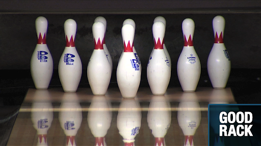

Check if the alleys in Singapore in general are open!
Ten pin bowling is a target sport where a player rolls a ball towards pins and is known worldwide. The goal of ten pin bowling is to get as many pins down as possible. The bowling ball usually weighs around 6-16lbs and has 2-3 holes drilled into it.
10 pin bowling has its pins shaped in a cone shape. There is 10 "frames" in a game of bowling. The goal is to knock down as many of them in 2 shots, excluding the last frame.
On Sept 9, 1985, the American Bowling Congress (ABC) was organized in New York City. Rules and equipment standards were developed, and the game as it finally was organized remained basically unchanged as the sport grew steadily. In 1904, bowling balls were still made of hard rubber balls, and automatic pin-setting machine in the early 1950s. Later in the 1970s to 1980s, polyester and urethane is introduced and replaced the hard rubber balls.
In the 1970s, bowling had a decline in popularity, however picked up again in 2012 and continues to rise in popualrity. The amount of people that are bowling in the competitive scene has also increased, especially with the introduction of two handed bowling. Some of the most well known professionals currently known on the PBA(Professional Bowlers Association) Tour are Jason Belmonte, Anthony Simonsen, EJ Tackett, Chris Via and Chris Barnes
The one said to be the best bowler in the PBA Tour as of now is Jason Belmonte. He started bowling in the PBA Tour in 2008 as a two-handed bowler. Although two-handed bowling was not popular at the time, in 2009, Belmonte won the Bowling Foundation Long Island Classic PBA Tour event in his PBA TV finals debut. As the second seed, he defeated Bill O'Neill, and went on to defeat number one seed Mike Fagan 215-201 for his first PBA title, thus getting him the 2008-2009 Rookie of the Year award. After this, he continues to win more and more titles, and has the most number of majors won, at a resounding 15, which is 5 more than the 2nd, which only has 10 major titles won.
Some of the most well known bowlers in the past are people like Pete Weber or Norm Duke, who recently retired in 2022 at the age of 58, and winning over 40 titles
When all the pins are knocked down in the 2 shots given, it is a spare. When all the pins get knocked down in the first shot of a frame, it is considered a strike. Getting 2 strikes in a row is called a double, 3 strikes in a row is called a Turkey, while 4 and 5 strikes in a row are called four/five baggers and so forth. A strike is commonly marked with a "X" while a spare is marked with a "/". When 9 or less pins are hit in one frame, it is an open frame. Any shot taken that does not hit any pins is marked with a "-"
The scoring system works differently for strikes, spares and open frames
Spare: 10 points + the number of pins you knock down for your first shot at the next frame.
Strikes: 10 points+ the number of pins you knock down for the entire next frame
Double:1st frame- 20 points + the number of pins you knock down in 3rd frame 2nd frame- same as scoring for strike
Turkey: 1st frame-30pts 2nd frame- same as double
Four-Bagger1st frame- 30 points 2nd frame- 30 points
3rd frame- same as double 4th frame- same as strike
Check if the alleys in Singapore in general are open!